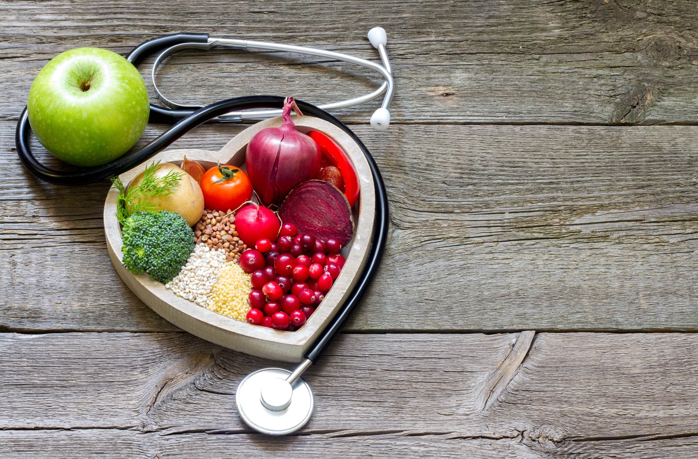

Introduction:
In an era marked by hectic lifestyles, fast-paced routines, and an abundance of processed food options,
the significance of healthy food consumption cannot be overstated. The food choices we make directly
impact our physical health, mental well-being, and overall quality of life. This article explores the
reasons why prioritizing healthy food is crucial for individuals and society as a whole.
Nutrient-Rich Diet:
Healthy food provides essential nutrients that are vital for the proper functioning of the body. These
include vitamins, minerals, proteins, carbohydrates, and fats, all of which play specific roles in
maintaining good health. A balanced diet ensures that the body receives the necessary nutrients in the
right proportions, promoting optimal organ function and overall well-being.

Disease Prevention:
A diet rich in fruits, vegetables, whole grains, and lean proteins is associated with a lower risk of
chronic diseases such as heart disease, diabetes, and certain types of cancer. Nutrient-dense foods
contribute to the prevention of inflammation and oxidative stress, reducing the likelihood of developing
health issues that can significantly impact life expectancy and quality of life.
Energy and Productivity:
Healthy food serves as fuel for the body and mind. Nutrient-rich meals provide a sustainable source of
energy, helping individuals stay alert, focused, and productive throughout the day. Unlike the quick
energy spikes and crashes associated with processed foods, a diet based on whole, nutritious foods
provides a steady and reliable source of energy.
Mental Health:
The connection between diet and mental health is increasingly recognized. Consuming a variety of
nutrient-rich foods has been linked to improved mood, reduced stress levels, and better cognitive
function. Certain nutrients, such as omega-3 fatty acids found in fish, have been shown to support brain
health and may play a role in preventing mental health disorders.
Weight Management:
Maintaining a healthy weight is a key factor in preventing a range of health issues. Healthy food
choices, combined with regular physical activity, contribute to weight management and help reduce the
risk of obesity-related conditions. Whole foods are often lower in calories and higher in nutritional
value, making them a fundamental component of a sustainable weight management plan.
Environmental Impact:
The choices we make regarding food consumption also have broader implications for the environment.
Sustainable and plant-based diets have been associated with lower environmental impact, reduced
greenhouse gas emissions, and conservation of natural resources. Opting for locally sourced, seasonal,
and organic foods can contribute to a more environmentally friendly food system.
Conclusion:
In conclusion, the importance of healthy food consumption extends far beyond individual well-being. It is
a cornerstone for preventing diseases, supporting mental health, maintaining a healthy weight, and
fostering a sustainable environment. By making informed food choices, individuals can positively impact
their own health and contribute to the overall health and sustainability of our communities and the
planet. Embracing a lifestyle centered around nutritious and wholesome foods is an investment in a
healthier, more vibrant future.